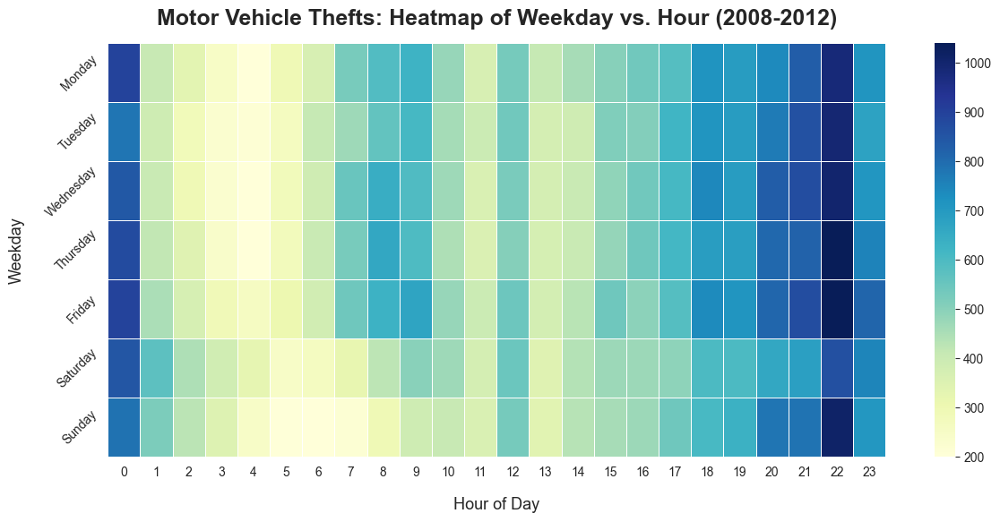
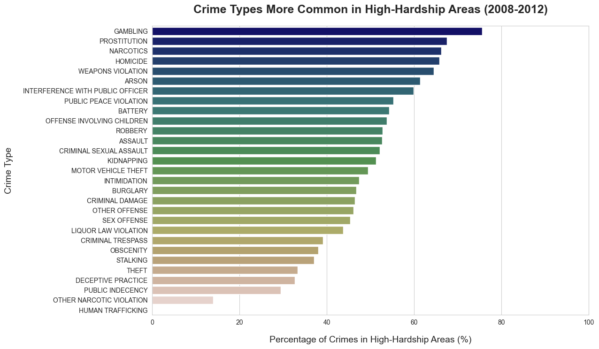

Chicago Crime Data Analysis & Visualisation
An exploration of Chicago crime and socioeconomic data, focusing on data visualisation, temporal patterns, and geospatial analysis.
About the Project
As part of my studies, I completed a project analysing crime data from the City of Chicago (2008-2012). I combined crime records with socioeconomic data to examine patterns over time, by location, and across community areas.
My work involved preparing and transforming the data for analysis, exploring relationships within the datasets, and presenting the results through a range of static and interactive visualisations. Data visualisation became one of my favourite aspects of the project, especially finding ways to make larger, more complex datasets easier to explore and understand.
Exploring Crime Patterns
I began the analysis by looking broadly at the different types of crime recorded in the dataset and how their frequency changed over time.
Scroll within the visualisation to explore all crime categories. On smaller screens, you can also scroll horizontally.
The comparison shows how recorded crime counts changed between 2008 and 2012 across a wide range of categories. The interactive Plotly visualisation allows each category to be explored individually by hovering over the bars.
After exploring the broader crime patterns, I narrowed the analysis to motor vehicle thefts to investigate how incidents varied by weekday and time of day.

The heatmap highlights a much stronger pattern by time of day than by weekday, with incidents generally becoming more frequent later in the day.
Socioeconomic Factors and Crime
To add socioeconomic context to the crime data, I combined the crime records with Chicago community-area hardship data. The Hardship Index summarises several socioeconomic indicators, including poverty, unemployment, educational attainment, crowded housing, dependency, and per-capita income. Higher scores represent greater socioeconomic hardship.
Rather than comparing raw crime totals, I calculated the percentage of each crime category recorded in high-hardship community areas. This makes the visualisation a comparison of where different crimes occur, rather than how common each crime is overall.

The strongest concentrations in high-hardship areas were found for gambling, prostitution, narcotics, homicide, and weapons violations. These results show an association between the geographical distribution of certain recorded crimes and socioeconomic hardship.
Importantly, I treated hardship as a context variable rather than a causal explanation. These visualisations do not show that poverty, unemployment, or lower educational attainment cause particular crimes. They show that some recorded crime categories are more geographically concentrated in communities facing greater socioeconomic challenges.
To explore these patterns geographically, I selected the five most frequently recorded crime categories in Chicago overall, and the five categories with the highest proportion of incidents in high-hardship areas. Narcotics appeared in both groups; this resulted in nine crime catagories for the interactive map.
Explore the map using the layer controls to compare crime categories and socioeconomic hardship across Chicago.
Exploring Spatial and Temporal Patterns
In addition to comparing crime patterns with socioeconomic hardship, I also explored how individual crime types varied across both location and time. As part of the project, I was asked to investigate the geographical distribution of prostitution-related incidents recorded on Friday nights. The resulting interactive heatmap shows the distribution of these incidents across Chicago, with markers highlighting the five community areas with the highest number of recorded incidents.
Explore the interactive map by zooming, panning, and selecting the highlighted community areas for more information.
The incidents were distributed across several parts of Chicago rather than being concentrated in a single area, although some locations showed noticeably higher densities.
Reflection
What I enjoyed most about this project was that many of the tasks were open-ended. Rather than simply applying a particular Pandas function or reproducing a predefined result, I often had to investigate the data, decide how to approach a question, and determine which visualisation would communicate the result most effectively.
Data visualisation was an especially enjoyable part of the project for me. Before studying AI and data analysis, I studied graphic design and animation, so I already had an interest in visual communication. This project gave me an opportunity to apply that background in a very different context: using visual design not just to make something visually appealing, but to make patterns within complex data easier to understand and explore.
That interest also led me beyond some of the original assignment requirements. The interactive crime and hardship map, for example, was an additional visualisation I chose to create after exploring the relationship between crime data and socioeconomic hardship. Being able to take a question further and experiment with different ways of presenting the results was one of the most rewarding parts of the project.